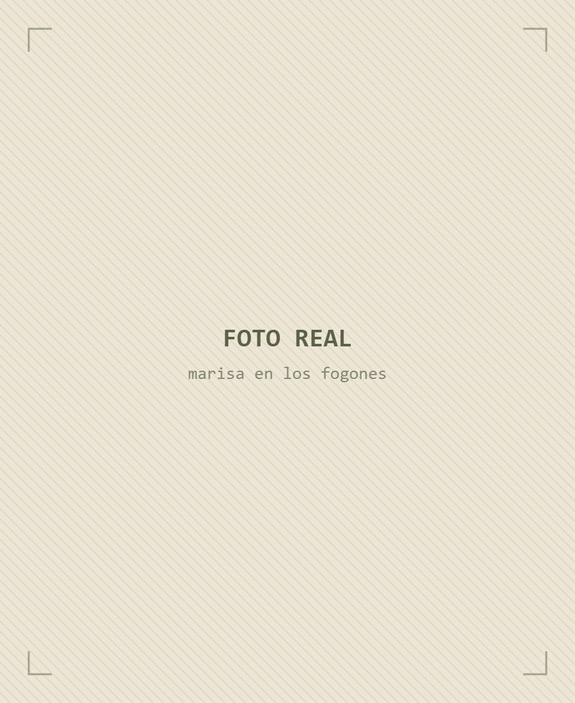
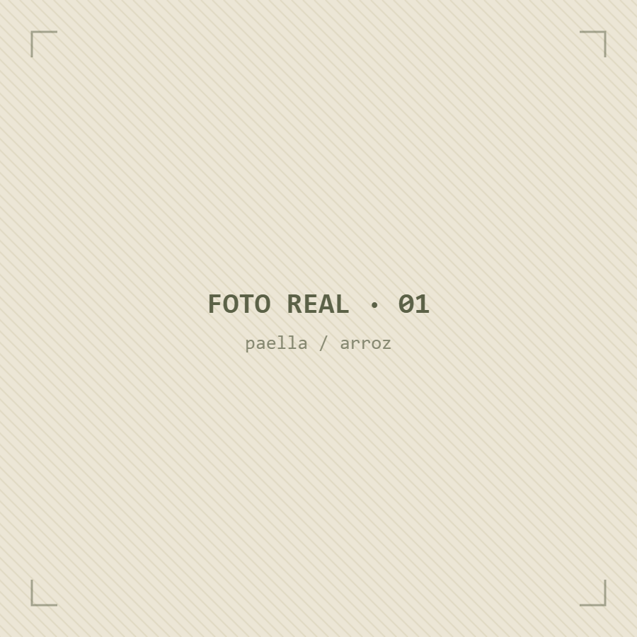
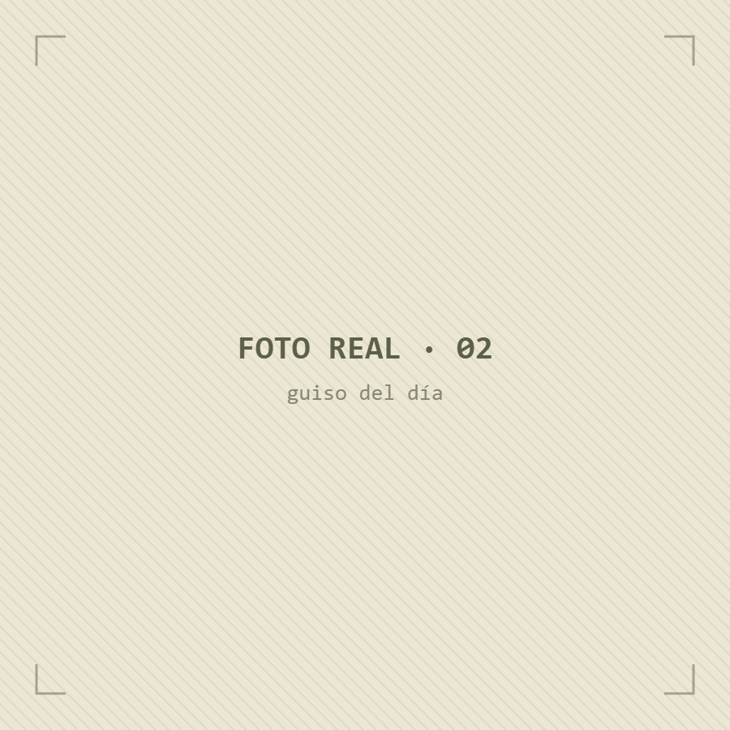
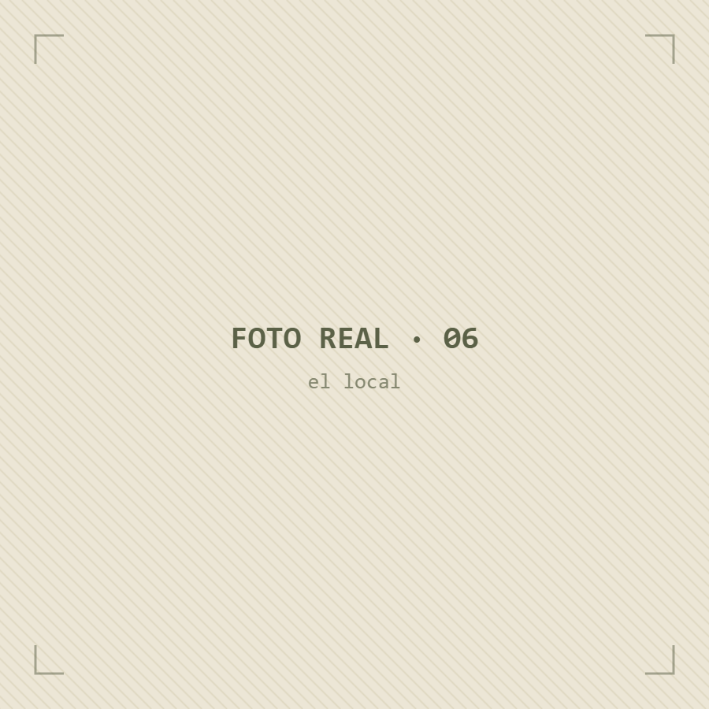

🍚
Arroces
Paella y arroz al horno como en casa, a fuego y con su tiempo. De los que se hacen esperar.
Marisa cocina cada mañana los clásicos de siempre y platos que te sorprenden. Tú lo pides, te lo dejamos listo y caliente. Pregúntale qué hay hoy por WhatsApp.

Aquí no hay carta congelada ni microondas. Cada plato lo guisa Marisa cada mañana con lo que trae del mercado: los clásicos de toda la vida —paella, arroz al horno, fabada, pollo al horno— y recetas que se trae de medio mundo, latinas, asiáticas, europeas.
Y al otro lado del mostrador, Dani, su hijo, que te recibe con una sonrisa y te explica al detalle lo que hay hoy. Aquí no eres un comensal: eres del barrio.
Comida casera y no tan casera: los guisos de siempre y recetas que no te esperas. La carta cambia cada día con lo que hay fresco; estos son los imprescindibles, y lo de hoy te lo contamos por WhatsApp.
Paella y arroz al horno como en casa, a fuego y con su tiempo. De los que se hacen esperar.
Fabada, pollo al horno, platos de cuchara… lo que se cuece hoy en la olla, recién hecho.
Hoy latino, mañana asiático, pasado europeo. Recetas que Marisa trae de medio mundo, siempre con producto fresco.
Opciones vegetarianas y veganas que cambian a diario. Pregunta y te decimos lo de hoy.
Tú lo pides, nosotros lo guisamos, tú lo recoges caliente. Comida de casa sin manchar una olla.
Casas falleras, comidas familiares, celebraciones… Dinos cuántos sois y de qué tenéis ganas, y lo dejamos listo.
La carta cambia cada día con lo que trae el mercado. Escríbenos por la mañana —pedidos de 9 a 12— y te decimos qué hay hoy; lo recoges calentito al mediodía.
Pregúntanos qué hay hoyAlgunos de los platos que pasan por aquí. Fotos reales de La Casa del Sabor.



"Sin duda, la mejor casa de comidas de Valencia. Tienen platos originales y también los clásicos de toda la vida, todo hecho con muchísimo cariño y con un sabor espectacular. El trato es inmejorable: Marisa es una auténtica crack, siempre atenta y con una sonrisa."
"Lo que más llama la atención es cómo juegan con nuevas recetas súper originales con ingredientes increíbles. Es difícil fallar ya que todo está buenísimo. Además de la comida, el servicio es increíble, los chicos que te atienden son un encanto y te reciben siempre con una sonrisa."
"Comida casera excelente. Con una atención genial, siempre te explican con detalle las elaboraciones. Gran variedad de platos, tienen muchas opciones vegetarianas, veganas… Calidad-precio excepcional. Muy recomendable."
Pásate al mediodía a recoger lo tuyo, o escríbenos antes y te lo dejamos listo y caliente.
Escríbenos por WhatsApp y te decimos qué hay en la cocina. Te lo dejamos listo para recoger.
Ver qué hay hoy o llámanos al +34 963 95 16 60